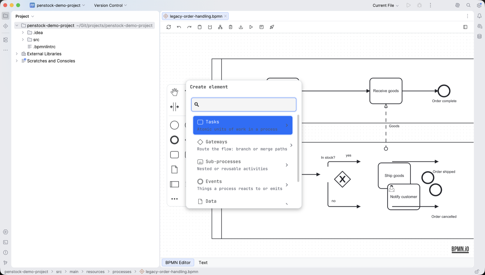

BPMN elements
The palette down the left of the canvas carries the elements most diagrams are built from. Everything else — every task type, every event, every gateway — is behind Create element at the foot of the palette, which is searchable and explains what each element is for.
The palette
Four tools and ten elements, in this order:
| Hand tool | Pans the canvas without selecting anything. |
| Lasso tool | Rubber-band selection. |
| Space tool | Inserts or removes empty space, moving everything past the line you drag. |
| Global connect tool | Draws a connection starting from any element. |
| Start event | Where a process or a path begins. |
| Intermediate / boundary event | Something the process waits for or emits part way through; dropped on the border of an activity it becomes a boundary event. |
| End event | Where a path ends. |
| Gateway | A branch or a join. |
| Task | A step of work. |
| Expanded sub-process | A process drawn inside the diagram that contains it. |
| Data object reference | Data that lives as long as the process instance. |
| Data store reference | Data that outlives the instance. |
| Pool / participant | An organisation or system taking part in a collaboration. |
| Group | A visual box around elements; it carries no execution meaning. |
| Create element | Opens the catalogue below. |
The catalogue

Type to filter, or open a group. The same catalogue appears from an element's context pad, where it appends the element you choose to the one you started from, already connected.
Tasks — atomic units of work in a process
| Task | An unspecified step, often used as a placeholder. |
| User task | Work that needs to be done by a person. |
| Service task | Automated work carried out by a job worker or connector. |
| Business rule task | Evaluates a business rule, typically a DMN decision. |
| Script task | Runs a script. On Camunda 7 the script opens as a real editor tab — see Editing a diagram. |
Gateways — route the flow
| Exclusive gateway | Routes the token down one path, based on data. |
| Parallel gateway | Splits the flow into parallel paths, or joins them. |
| Event-based gateway | Follows the path of whichever event occurs first. |
Sub-processes — nested or reusable activities
| Call activity | Calls another process as a reusable subprocess. |
| Transaction | A subprocess that completes as a whole, or is compensated. |
| Event sub-process | A subprocess triggered by an event in its scope. |
| Sub-process, collapsed | Groups elements into a subprocess, shown collapsed. Double-click to open it in its own view. |
| Sub-process, expanded | Groups elements into a subprocess, drawn inline. |
| Ad-hoc sub-process | Activities run in any order, any number of times. Collapsed or expanded. |
Events — what a process reacts to or emits
Events are grouped by where they sit in the flow rather than by what they carry, because the same kind of trigger means different things in each position.
| Start events | Where a process or path begins. |
| Intermediate catch events | Wait for something to happen before continuing. |
| Intermediate throw events | Emit an event, then continue. |
| Boundary events | React to something while an activity is running. Interrupting ones cancel the activity; non-interrupting ones leave it running. |
| End events | Where a process path ends. |
Inside each group are the triggers BPMN defines — message, timer, error, escalation, signal, compensation, conditional, link, terminate — restricted to the ones that are legal in that position.
Data
| Data object reference | Data created and used within a process instance. |
| Data store reference | Data that persists beyond the process instance. |
Participants
A pool stands for an organisation or a system. Two pools in one diagram make it a collaboration, and the only thing that may cross between them is a message flow. Lanes divide a pool by role or department and carry no execution meaning of their own.
Changing an element into another
Select an element and use the wrench on its context pad. The menu offers every element the selected one can legally become — a task to a service task, a start event to a message start event, an exclusive gateway to a parallel one — and the change keeps the connections, the name and the properties that still apply.
What each profile adds
The palette and the catalogue are the same in all three engine profiles: BPMN is BPMN. What changes is what the properties panel offers once an element is selected, and which namespace the editor writes into the file. See Engine profiles.